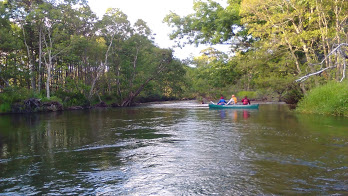
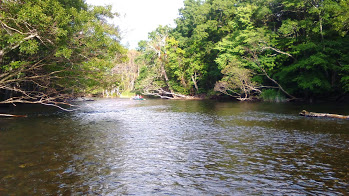

知床半島は、北海道の北東部に位置しています。
知床半島はアイヌ語で「地の涯て」を意味する「シリエトク」と呼ばれ、
現在では広く「地の涯て・知床」として知られています。
その豊かな自然が評価され、世界自然遺産に2005年7月17日に登録されました。
世界自然遺産の1つでもある知床はその雄大な自然に大きな魅力があります。
知床では、カヌーに乗って、ゆったりとその自然を満喫。
聞こえるのは水の音だけで、都会の喧噪と切り離された、まさに非日常空間です。
 北海道には特産品がたくさんあります。
乳製品はもちろん、新鮮な海鮮料理も人気が高いですが、ここでおすすめしたいのは、
アイヌ料理です。アイヌ文化も垣間見えることでしょう。
知床に着いたら、早速海に！
天候等で必ず見られるとは限りませんが、イルカ，シャチ、クジラなどなど
海の生き物たちを間近で見られるかも・・？！
夜は、野生動物の活動が活発に。
シカ、キツネなどなど普段見られない姿を見られるかも・・？
そして、ツアーの最後には、満天の星空を鑑賞。
吸い込まれそうなほど美しい星空は必見です。
北海道といえば、その広大な土地を生かした酪農。
本場で乳しぼり体験をしましょう。
新鮮な牛乳を使った乳製品が販売されていることもあるので、お土産に◎
ここでしか味わえない伝統料理・文化を感じることができます。
2日目もアクティブに！雄大な自然を感じましょう。
日本で数少ない世界自然遺産の知床。
そんな知床半島で知床八景の一つとして知られています。
北海道に来たなら、海鮮丼も外せません。
新鮮な魚介類を堪能しましょう！
ノロッコ号という特別列車で、釧路湿原を観光できます。
車内で旅の疲れを癒しましょう。